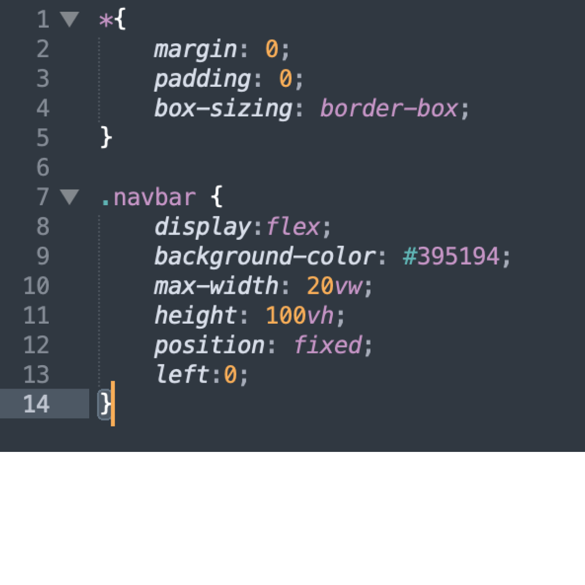

Sometimes the color can negatively affect the overall feel of the website. If you have a light background, use a dark color font. And if you have a darker background, use a lighter font. Speaking of fonts, try to use more weighted fonts if you really have to use a specific font or if a font isn't as much of a contrast.
